Truth Social / Reuters
特朗普宣布组建AI Force
来源: Truth Social / Reuters · 2026-09-20 · 原文链接
Trump 9月19日在Truth Social宣布将组建“AI Force”，并任命一名新的AI czar，称任务包括维持美国AI领先地位、降低企业采用成本及协调联邦工作。声明没有给出组织归属、负责人姓名、预算或启动日期，因此目前只能确认政策意向，不能写成机构已经运作。
Janet 锐评：
白宫给AI再造一个协调中枢，最先改变的可能不是模型，而是政府采购、数据中心审批与监管口径的入口。名称很响，执行细节却还是空白；等人选、预算和授权边界出现后，才看得出它是政策总控台，还是另一块争夺话语权的牌子。
Associated Press
四家AI巨头因减速共识遭起诉
来源: Associated Press · 2026-09-20 · 原文链接
四名付费用户在加州北区联邦法院起诉Anthropic、OpenAI、SpaceXAI与Google，指控企业围绕放慢前沿AI研发形成反竞争协调，并寻求全国集体诉讼。案件把9月12日Amodei文章及多位领导者的公开响应列为线索；被告尚未回应，法院也未认定存在协议。
Janet 锐评：
安全共识第一次被用户直接翻译成“你们是不是联手限制供给”。原告能否证明竞争者之间存在协议，门槛远高于拼接几段公开发言，但诉讼已经逼实验室留下决策记录：谁提议减速、谁讨论价格与供给、谁在什么条件下同意。安全治理从口号进入证据开示，内部聊天和会议纪要都会变贵。
Axios / U.S. Department of Justice
美国司法部撑AI训练公平使用
来源: Axios / U.S. Department of Justice · 2026-09-20 · 原文链接
美国司法部在《纽约时报》诉OpenAI与Microsoft案中提交立场书，主张模型训练可构成transformative fair use，同时强调这一判断未必覆盖生成输出。Axios称文件没有职业反垄断律师署名，USPTO与版权局也未参与表态；这是政府诉讼立场，不是法院判决。
Janet 锐评：
训练与输出被司法部切成两张风险表，模型公司拿到的是一层防线，不是版权免死金牌。内容企业最容易误判的地方，是把“训练可能合理使用”外推成“生成、展示、替代原作都安全”。产品日志若不能追溯素材来源、输出相似度和用户调用，法庭上的主动权仍会落到掌握证据的一方。
Reuters / MarketScreener
央行顾问警告AI将推高供需失衡
来源: Reuters / MarketScreener · 2026-09-20 · 原文链接
中国央行货币政策委员会委员黄益平警告，AI提升供给能力的速度可能快于居民需求修复，从而加深“强供给、弱需求”失衡。他提出修复地方政府、金融机构与企业资产负债表，并以扩大消费、市场化改革和海外产业合作吸收新增生产力；相关意见属于个人政策建议。
Janet 锐评：
AI把产能抬高并不自动创造订单。若家庭收入预期、企业资产负债表和服务消费没有同步修复，效率红利会先变成价格战与库存压力。对中国AI公司而言，卖一套更快的自动化只是开场，客户能否因此获得新增收入才决定续费。
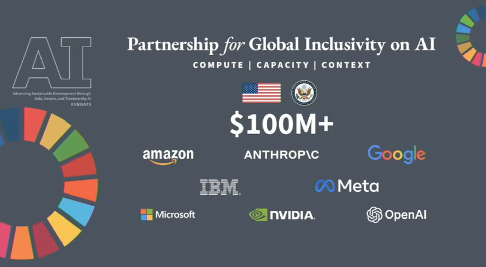
Axios / Morning Consult
实用案例将美国AI信任推高14点
来源: Axios / Morning Consult · 2026-09-20 · 原文链接
Morning Consult为Axios调查1,522名美国成年人：受访者先看到AI改善医疗、天气预报、反欺诈等案例后，对AI“非常或较为信任”的比例从41%升至55%。调查在9月15日至16日进行，误差约正负3个百分点；结果测量的是短期信息刺激，不等于长期态度已经逆转。
Janet 锐评：
公众对AI的信任并非固定资产，具体用途比“未来会更好”有效得多。医疗预警、诈骗识别和天气预测能让抽象风险落到可检查的结果。产品传播若只讲模型智商，用户仍找不到把信任交出去的理由。
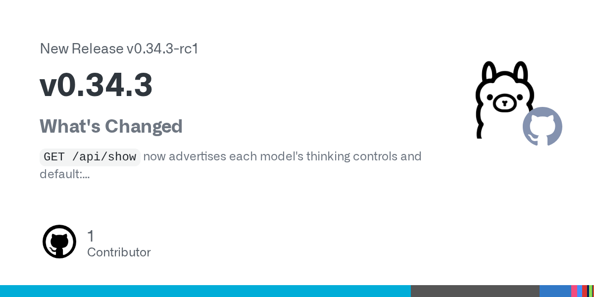
Ollama / GitHub
Ollama上线模型思考档位
来源: Ollama / GitHub · 2026-09-20 · 原文链接
Ollama v0.34.3-rc1让GET /api/show返回模型支持的thinking values与默认档位，并为Apple Silicon上的Nemotron H视觉模型加入MLX路径；同时修复Hugging Face拉取与macOS窗口重开问题。该版本明确标记为pre-release，尚不宜直接替换稳定生产环境。
Janet 锐评：
思考档位进入模型元数据，路由器终于能少靠硬编码猜能力。生产端仍得把版本钉住；RC版适合验证接口和Apple Silicon路径，稳定性账单留到正式版再签。
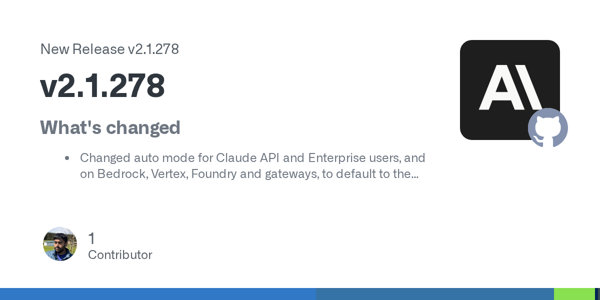
Anthropic / GitHub
Claude Code把分类器移到服务端
来源: Anthropic / GitHub · 2026-09-20 · 原文链接
Claude Code v2.1.278把API、Enterprise、Bedrock、Vertex、Foundry及gateway的Auto mode默认交给server-side classifier，并在/status显示“Auto mode server”。官方称使用服务端分类器时不再产生本地分类器开销；实际路由、延迟和账单仍取决于供应商配置。
Janet 锐评：
Auto mode少跑一次本地判断，链路更短，但路由逻辑也更靠近供应商黑箱。团队观察的不只是一轮延迟，还包括同一任务跨版本是否切到不同模型、成本是否漂移，以及gateway能否留下完整选择记录。
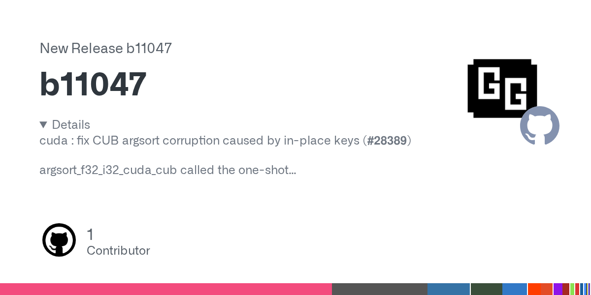
llama.cpp / GitHub
llama.cpp连续发布CUDA与Metal修复
来源: llama.cpp / GitHub · 2026-09-20 · 原文链接
llama.cpp在同日nightly构建中连续修补底层路径：b11047修复CUDA CUB原地key alias导致的错误排列、垃圾索引与越界gather，后续b11048加入Qwen4实验性Metal HC算子，b11050再修Metal Flash Attention能力检查。三者都是预发布构建。
Janet 锐评：
越界gather不是跑慢一点，而是可能把错误结果伪装成正常输出。依赖nightly追新模型的本地推理团队，基准分数之外还得留一组固定样本和内存检查；连续三个构建都在动GPU路径，回归窗口要拉长。
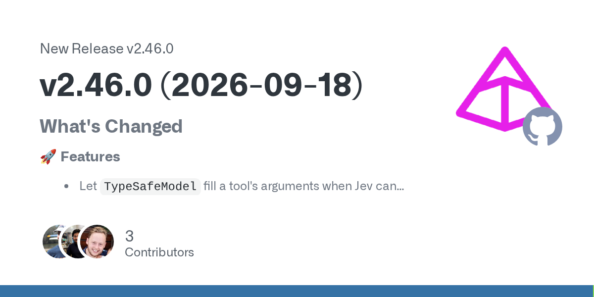
Pydantic AI / GitHub
Pydantic AI扩展类型化Agent决策
来源: Pydantic AI / GitHub · 2026-09-20 · 原文链接
Pydantic AI v2.46.0加入TypeSafeModel，可填充工具参数并在union中选择类型；RealtimeSession新增wait_for_playback，评测模块补上supports_text_output与类型化阈值，TemporalDurability也接入Workflow Streams。版本同时修复实时会话、成本追踪、无效URL与Bedrock thinking问题。
Janet 锐评：
Agent一旦进入审批、路由和工具调用，类型约束比自由文本更容易测试。类型安全也只管输出形状，业务含义和阈值校准仍要用真实失败样本压过一遍。
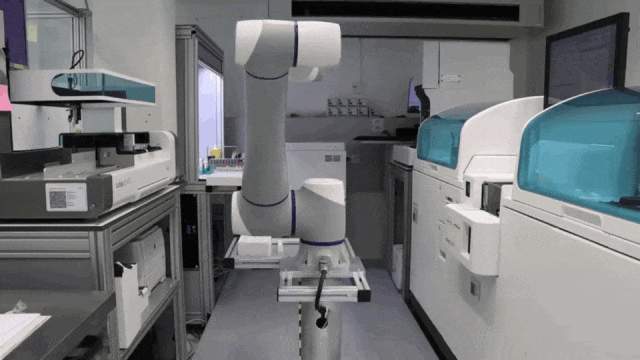
Associated Press
实验室逼近递归自我改进门槛
来源: Associated Press · 2026-09-20 · 原文链接
AP梳理recursive self-improvement进展：Anthropic称Claude已主导26%的模型研发任务，并参与约90%的研发工作；OpenAI把目标拆成受人指导的自动化“research intern”，xAI则预期继续降低人的介入。各家定义并不一致，现有系统仍受人监督，报道没有证明完全自主的RSI已经实现。
Janet 锐评：
最危险的误读，是把“模型参与下一代研发”直接等同于无人实验室已经降临。26%端到端任务和90%协作率说明反馈环正在缩短，却没有回答研究方向由谁决定、失败实验怎样复核、训练资源由谁放行。真正的门槛落在连续多轮改进仍可追踪、可中止、可归责，而不是一次漂亮的自动化演示。
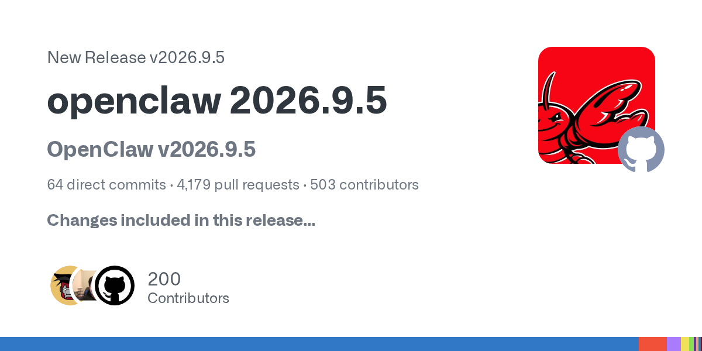
OpenClaw / GitHub
OpenClaw封住权限撤销后的后门
来源: OpenClaw / GitHub · 2026-09-20 · 原文链接
OpenClaw v2026.9.5把权限变化直接接进自动化执行：调用者权限被撤销后，cron与运行中的工具访问会停止；通知目标须通过owner与account-send策略，sandbox写入拒绝symlink逃逸，浏览器下载也服从目的地策略。官方发布说明仍列有部分豁免或待完成验证。
Janet 锐评：
撤销权限若只影响下一次登录，后台Agent仍可能沿着旧token继续干活。把cancel、cron、通知与文件写入接到同一授权链，才叫真正关闸。版本说明里保留的豁免也很诚实：安全上线不等于所有边角都已验完。
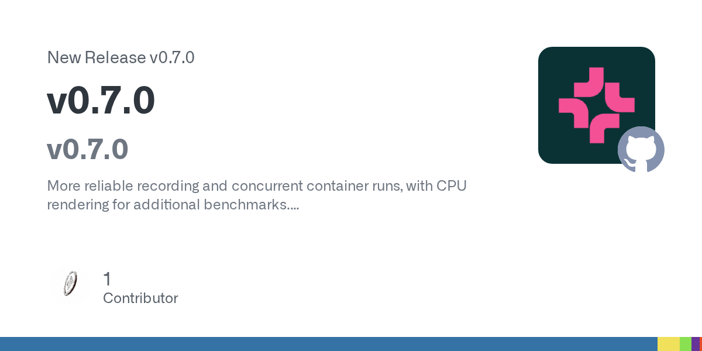
Allen Institute for AI / GitHub
AllenAI给机器人评测补上复现底座
来源: Allen Institute for AI / GitHub · 2026-09-20 · 原文链接
AllenAI VLA Evaluation Harness v0.7.0为ManiSkill2与SimplerEnv加入Mesa lavapipe CPU渲染，补上Charliecloud并发、SQLite串行写入与一致快照、分片跟踪等能力；旧的vla-eval merge被export取代，环境要求SQLite 3.24以上。更新重点是让评测在更多基础设施上稳定复跑。
Janet 锐评：
机器人benchmark常败在环境比模型先漂：渲染器、分片和结果库任何一层不一致，榜单就失去可比性。CPU兜底和快照写入看着不炫，却让同一任务能在不同机器上重跑；这类工程细节比再加一张平均分更接近可信评测。
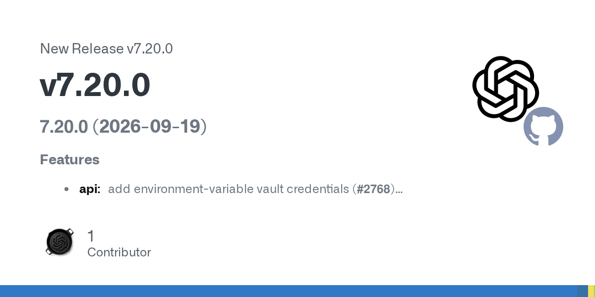
OpenAI / GitHub
OpenAI Node SDK接入安全预警钩子
来源: OpenAI / GitHub · 2026-09-20 · 原文链接
OpenAI Node SDK v7.20.0扩展控制接口，加入环境变量vault凭证、外部存储配置管理、安全案例读取，以及safety warning与deactivation webhooks，并补充SIP来电媒体安全字段。版本也修复请求选项保留等问题；这些接口是否可用仍受账号和endpoint权限约束。
Janet 锐评：
安全告警进webhook，才可能进入值班、停用与复盘链路。只把事件打印在控制台等于没人接电话；上线前还要确认告警重试、签名验证和停用后的会话处置。
今日核心预测
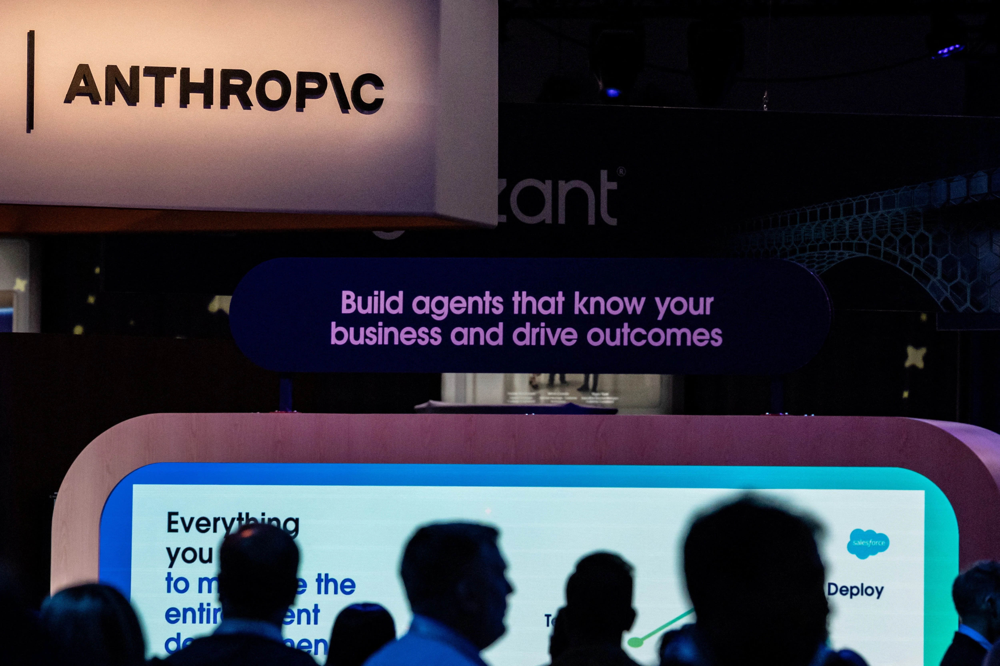
Reuters / MarketScreener
Anthropic或在IPO前抢发新模型
来源: Reuters / MarketScreener · 2026-09-20 · 原文链接
Reuters引述三名知情人士称，Anthropic正考虑在IPO前推出新模型，以回应OpenAI Astra在企业支出中的上升势头，同时权衡安全评估、投入规模与盈利改善。Anthropic拒绝评论，发布时间距离本期窗口起点仅3分钟；目前没有正式发布、型号或确定日期。
Janet 锐评：
IPO时钟会把模型路线图变成估值工具。若企业支出真的向Astra偏移，Anthropic既要用新品守住增速，又不能让训练和推理成本把利润叙事打穿。市场最容易被“即将发布”带节奏，实际可核的仍是上线日期、迁移率、单位成本和企业续约；知情人士的消息只能说明压力，不能替产品交卷。
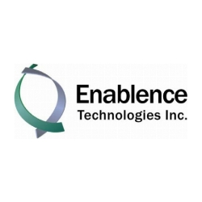
Enablence / Newsfile
Enablence获2500万加元扩光芯片产能
来源: Enablence / Newsfile · 2026-09-20 · 原文链接
Enablence完成Collingwood Investments的2,500万加元战略股权投资，以每股7.75加元发行3,226,000股，资金用于扩充硅谷与越南晶圆厂产能、营运资金及一般企业用途。交易在9月15日已宣布，本窗口新增事实是完成交割，且仍待TSXV最终接受。
Janet 锐评：
AI数据中心继续把钱推向光通信上游，但交割金额和产能兑现是两回事。晶圆厂扩建周期、良率与客户集中度会决定这2,500万加元能换来多少可售器件；把closing写成新一轮融资，只会把资本进度表读错。
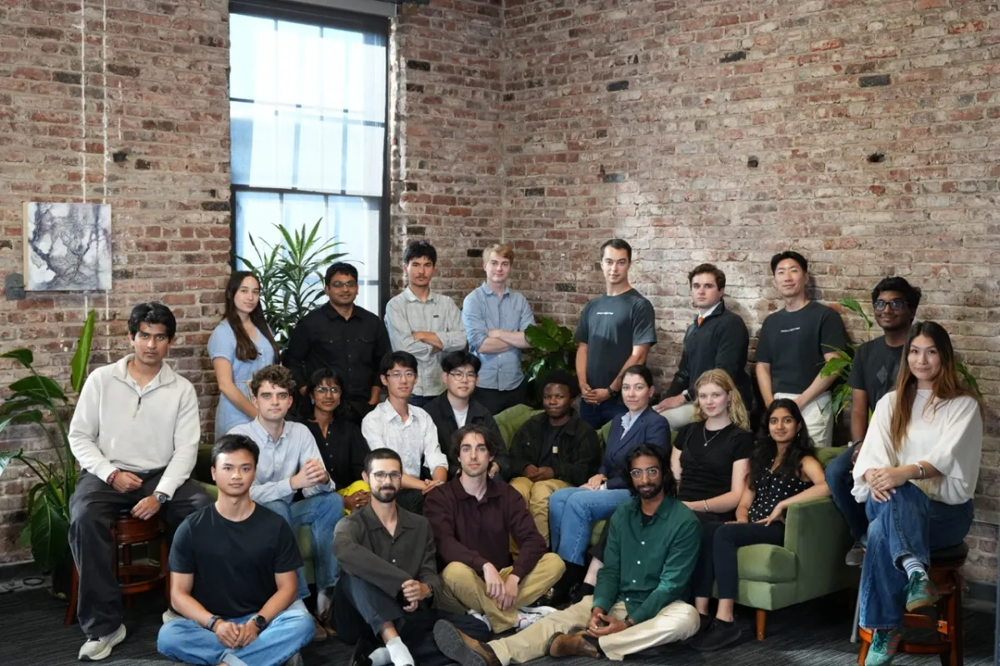
TechCrunch
Vals收入增至八倍评测开始收费
来源: TechCrunch · 2026-09-20 · 原文链接
Vals联合创始人向TechCrunch披露，公司以不公开测试材料和行业专属benchmark降低题库泄漏，收入同比增至约8倍，团队从年初8人扩至25人并计划再招10至15人，同时启动联邦机构评测项目。文中4,000万美元Series A发生在上月，不是本窗口新融资，经营数据也未经审计。
Janet 锐评：
公开榜单容易被训练集吃掉，私有题库的商业价值就在于客户愿意为难作弊、能复跑的结果付钱。Vals接下来要证明的不是收入倍数有多漂亮，而是测试材料怎样保密、评分争议怎样仲裁，以及新增团队能否守住同一套标准。